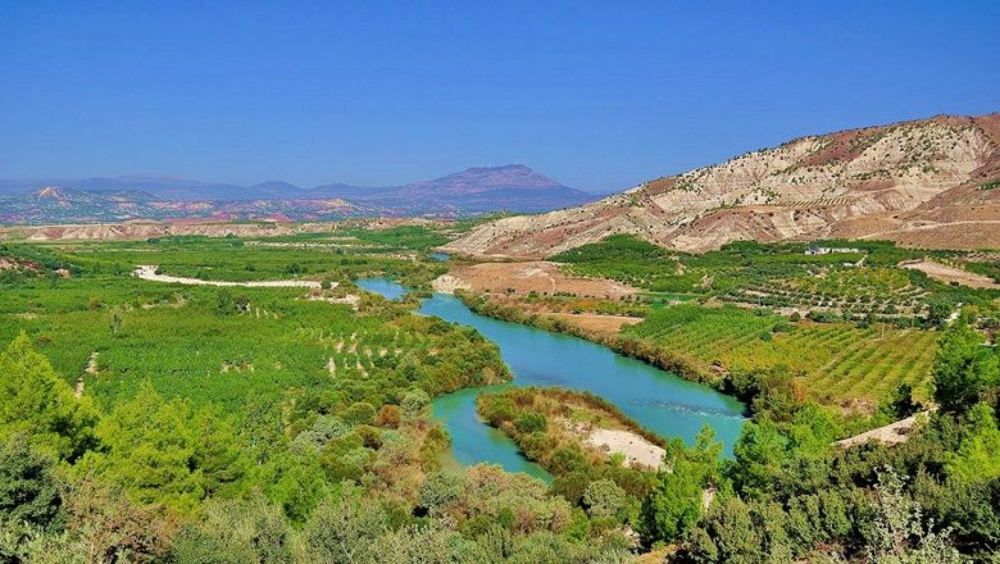
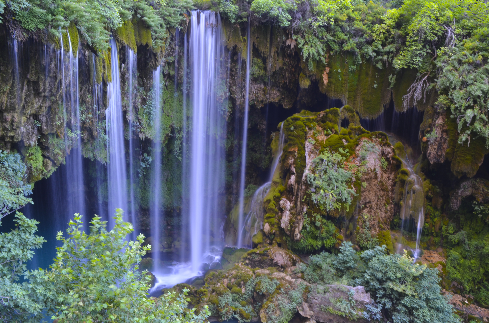
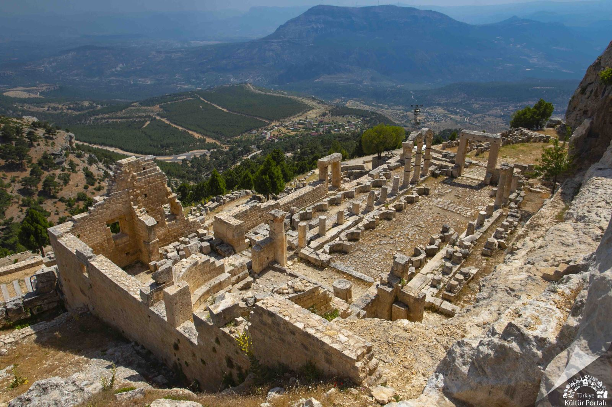
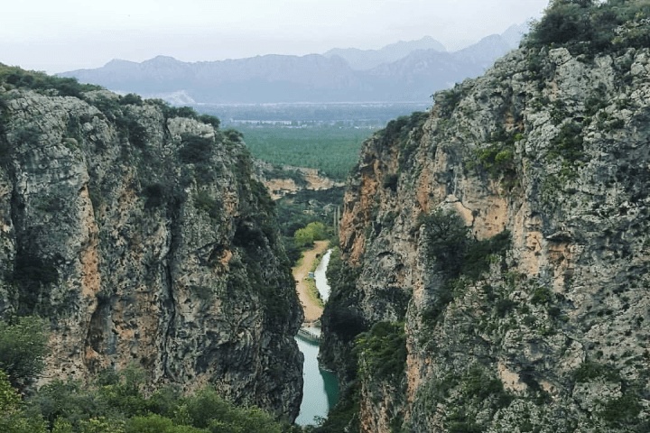

Genel Bilgiler
Mersin/Mut, Akdeniz Bölgesin'de yer alan ve doğal güzellikleri ile öne çıkan bir şehirdir.Türkiyede yurtdışına ithal edilen birçok tarım ürününe ev sahipliği yapıp ekonomiyi canlandırmaktadır.
- Nüfus: 62.758
- İklim: Maki
Doğanın ve huzurun buluştuğu şehir




Mersin/Mut, Akdeniz Bölgesin'de yer alan ve doğal güzellikleri ile öne çıkan bir şehirdir.Türkiyede yurtdışına ithal edilen birçok tarım ürününe ev sahipliği yapıp ekonomiyi canlandırmaktadır.
Mersin'in Mut ilçesinde, Göksu Vadisi'ne hakim 1300 metre yükseklikteki Toros yamaçlarında yer alan Alahan Manastırı, MS 4. ve 6. yüzyıllar arasında inşa edilmiş önemli bir Erken Bizans hac merkezidir. UNESCO Dünya Miras Geçici Listesi'nde yer alan kompleks, kayalara oyulmuş kiliseler, vaftizhane ve sütunlu yürüme yollarından oluşur
Mersin'in Mut ilçesinde bulunan Yerköprü Şelalesi, 2001'de tabiat anıtı, 2021'de tabiat parkı ilan edilen 1.115 dönümlük alanda yer alan büyüleyici bir doğa harikasıdır. Yaklaşık 30 metre yükseklikten dökülen şelale, Gezende Kanyonu içerisinde, turkuaz rengi suyu ve zengin bitki örtüsüyle öne çıkar
Göksu Antalya, Konya, Karaman ve Mersin illerinden akan ve Mersin ili Silifke ilçesi güneyinde Akdeniz'e dökülen bir nehirdir. Göksu Nehri'nin uzunluğu 260 km, havza alanı 10.000 km²'dir. Aşağı yukarı aynı uzunlukta iki kolu vardır: Kuzey kolu Gökçay, güney kolu ise Gökdere'dir, ikisinin kaynağı da Toros Dağları'ndaki Geyik Dağları'ndan çıkar. Geyik Dağları Antalya-Gündoğmuş ve Konya-Hadim arasındadır ve Alanya'nın 50 km kuzeyinde bulunur. Bu iki kol Karaman-Ermenek'i geçtikten sonra Mut'un güneyinde birleşerek Göksu adını alır ve daha sonra Silifke güneyinde Paradeniz adıyla bilinen deltada Akdeniz'e dökülür.